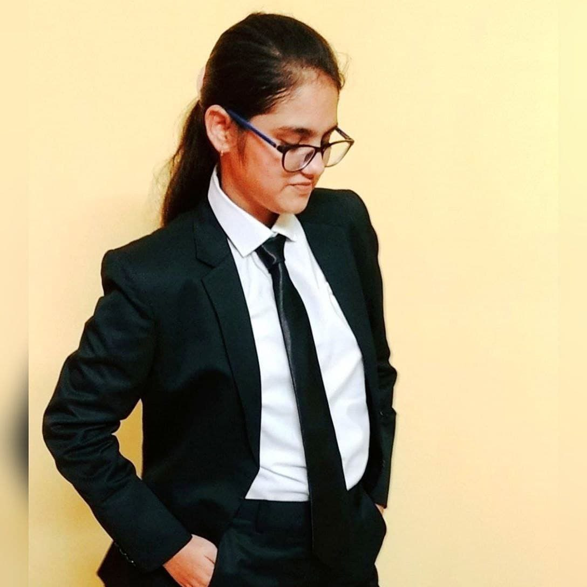

|  | Alina NaazA law student from South Calcutta Law College I am a third year law student from kolkata. I am a very passionate girl who love to explore new challenges in life. |
" Looking forward for the internship where I can fully give myself practical exposure in the legal field. "